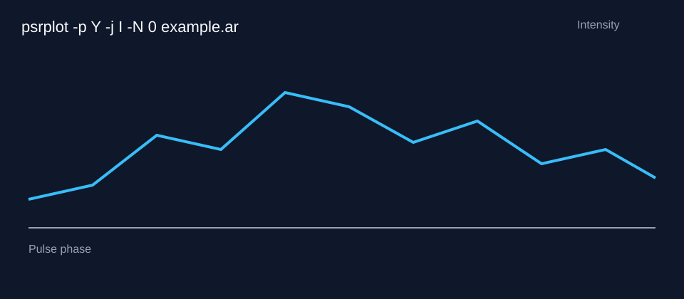

How PSRCHIVE works
Raw Observation Data
→
PSRCHIVE Command
→
Diagnostic Plot / Profile Output
This tutorial maps selected command arguments to precomputed example outputs.
Try command-line arguments
Command:
psrplot -p Y -j I -N 0 example.ar
